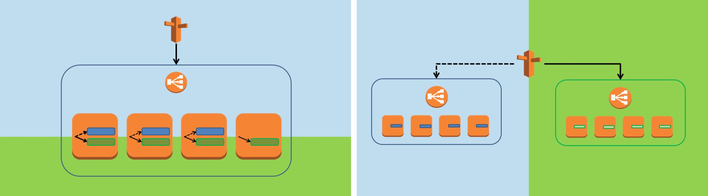

Here are some early thoughts about this and that. The more I think about it the clearer some of the things become. And still there are hundreds of open questions. Follow me through this journey trying to figure out what's the right thing to do for our next big project...
SUPER-scaling
We're currently kick-starting a Magento project with some very interesting (read: challenging) requirements regarding performance and scalability:
- up to 1000 "reservations"/sec (add to cart with inventory reservation)
- up to 30 orders/sec (and we were proud of our 10 orders/sec back then...)
- 2 million products
Let's face it, we won't get very far with a pure LAMP stack. Also, to be honest I'm not sure how much public-facing Magento will be left when we're done. Here are some of my very early thoughts on this that sparked a lot of conversations both online and offline:
I've been thinking a lot about how we've been doing things in the past, what worked well and what didn't, how we provisioned server, how we deployed new builds and how we managed our CI/CD process.
We've been using AWS OpsWorks a lot in the past and I do really like it (although there are some things I don't like, but that's going to be a separate blog post...). But while reflecting the requirements of this current project and looking at a huge mind map of various concepts, technologies and ideas we came up with, one thing becomes clear to me: OpsWorks and standard Magento might not be the best fit. And here's why:
Microservices vs. Monolith
Whatever we'll come up with, we have to learn to move away from the idea of having a set of servers that do something with a request. And after all this is what AWS is all about. In addition to (virtual) servers now there is also the popular containers concept and the highly interesting concept of not caring about infrastructure in the first place by using AWS Lambda. In any case, we need to stop thinking "servers" and start thinking "services" instead. There's a high chance that in the first phase of this project the various services continue to be implemented in a monolith app (Magento) running on a set of auto-scalable EC2 instances, but that's a different story. Still, I wouldn't call it "microservices" (yet), at this point it's going to be more "microservice-ish", but with clearly defined boundaries and interfaces (REST) that should make it easier to decouple the services/components after day one. The various services could be combined seamlessly into an API Gateway (e.g. using AWS API Gateway or seamlessly integrated into our Varnish layer that also takes care of caching and load balancing...)
Here's another first draft of the services that - as a whole - could represent the e-commerce domain implemented natively on Magento or alternatively "mapped" to other technologies (with or without Magento in the mix)
- session service
- account service
- cart service
- order service (place orders)
- order archive/history/status service
- stock service
- catalog service
- catalog price service
- cart price service (including campaigns, coupons,...)
- search service (also renders category pages)
- cms service
Why Microservices? SOA? Another buzzword, again?
"Microservices" is a buzzword these days, for sure. But I think the ideas behind it are important (I'm not saying they're ground-breaking and new...!). These are the main reasons why I think an architecture based on top of the idea of microservices could be a good fit for our project:
- Different services are being implemented by different teams at different points in time.
- Decoupling those and agreeing on an API upfront will allow everybody to do their part without being blocked by external dependencies.
- Running the services separately from each other allows us to detect bottlenecks faster and go back and scale and tune the different "functional units" separately.
- The different services might require different technologies. While we might pick a queue to process orders asynchronously after a quick synchronous check, we'll probably go for a lightweight NoSQL database to process cart operations faster and at scale. The product catalog on the other hand needs to be able to process (CRUD) a large amount of data in an acceptable amount of time (that's not necessarily a strength of Magento's native EAV implementation of the product catalog... :)
Phase 1: Initial Implementation in Magento
So how does Magento fit into this picture? We love Magento for what it is and ripping out all these services basically equals to re-implementing most of Magento's functionality. That doesn't sound like a smart plan.
To begin with we'll focus on defining clear APIs, both facing outside (REST) and inside (service classes). Magento's REST API "framework" is OK, and a good starting point. In fact we already started exposing the cart features into a clean REST API for a different project.
These services should still be name-spaced (for example cart-service.example.com or example.com/service/cart) but would all point to the same Magento instances being a monolith. (I don't think using Magento modules does really count for NOT being a monolith...)
By carefully planning on how to expose functionality AND how this is consumed internally it should be easy to decouple that piece of the monolith later when we experience that we need an alternate solution.
Another approach could be to treat them as if they were totally separate and implement every inter-service communication via HTTP(S). I'm not sure if the overhead of potentially many nested HTTP requests justifies the cleaner architecture here. After all I tend to opt for the pragmatic solution. Way too often have I experienced YAGNI.
Quick side note: Service contracts and a lot more functionatity exposed in the REST API make Magento 2 an interesting (future) platform for this project. Since we'll do this with Magento 1, we'll have to implement some of the missing REST APIs ourselves.
API Gateway
The next question is: Do we need an API Gateway? Do we need another piece of infrastructure were all requests come in first and then get dispatched to their respective endpoints? What would happen if browsers and mobile apps would directly hit every service?
I don't think direct access is a good idea, but on the other hand I also don't think the API Gateway needs to be too smart. Here are some possible options:
- No API Gateway
- AWS API Gateway: This would also allow us to replace some of the functionality with Lambda functions down to road.
- A ESB solution like MuleSoft.
- Varnish (or Nginx?)
Varnish? Yes, at this point I actually consider this a very good solution:
- We'll have a set of Varnish servers in place anyway that will take care of caching and load balancing.
- Since most of these services are probably going to be very lightweight (and may be implemented as a Magento module with a REST API) they would have to care about caching and load balancing internally.
- Varnish - acting as a proxy - would be able do a great job abstracting from the actual backends, unifying them into a single url or hostname pattern and allowing to replace services while maintaining a consistent public facing interface.
- The solution would be easy to configure and maintain and since all Varnish does is processing and dispatching HTTP requests it would be clear that there's no magic happening inside this API Gateway.
- Also, it's free and open source and we'd be able to fully control it as part of our infrastructure.
Rethinking functionality
Moving forward we'll be able to detect the bottleneck on a service-level. Separating the functionality from the beginning should make it easier to come up with alternative concepts and technologies for the different parts. As much as we love Magento, there are things Magento is really good at, and there are other things where Magento isn't. Here are some ideas of features that could/should be extracted and implemented with different technologies to improve performance and scalability:
- Full page cache: While Magento EE's full page cache makes pages rendering significantly faster there are some major issues with it:
- FPC disables block caching which in some cases - where you'd like the share an expensive block on different pages - is counterproductive.
- FPC is not super simple to hole-punch.
- FPC will continue to hit an only slightly more lightweight version of Magento. Bootstrapping Magento and PHP in general are still significantly slower than not having Magento in the mix in the first place. So instead we prefer Varnish since it is not only super efficient and fast, but it also comes with a lot of nice extra features that come in handy for the rest of our infrastructure (load balancing, proxy,...)
- Category pages: Rendering category pages in Magento can be really slow. Especially if there are many filters and facets in place. Most search products will easily outperform Magento's category pages and you'll get the extra benefit of having a unified user experience between search and catalog browsing when it comes to filtering and faceting. After all, the category tree is just another filter...
- CMS content: Magento's native CMS features are very basic. So this isn't necessarily a performance or scalability issue, but more of a usability and feature issue. Pulling in content from a different source isn't a hard thing to do and if you're dealing with a lot of content it's probably worth the increased complexity of managing another system.
- Image Rendering: Currently product images are rendered (resized,...) during the page rendering request in case that resized version isn't available locally. This will not only result in very slow response times when the product is being hit the first time (which happens if you have frequent product updates with new images), it also results in a ton of additional images that you'd have to share across all web nodes. Instead of actually rendering the image at the point in time we prefer generating a signed url that contains all processing instructions so that the rendering process can be decoupled and rendered in a different process. The result can then be cached locally or - using the correct HTTP header - you can leverage CloudFront to cache that image for you. We've already implemented this: Aoe_LazyCatalogImages.
- Price Engine: Product prices may change very frequently. Binding the prices to the rest of the product data and also including those prices in (cached) product single views and search results seems like a waste of resources, since caches have to be invalidated and products have to be re-indexed whenever prices change. Instead we're planning on replacing all price information by statically cacheable placeholders (both on product single views and in search results / category lists), and request the current prices in a separate HTTP call from a price engine and replace the placeholders client-side. This does not only affect catalog prices, but also actual prices in the cart (row totals and totals), taking coupons, sales rules, customer specific prices and tier prices into account. At this time it's not clear to me if this "cart price engine" and the "catalog price engine" are the same thing or should be separated into two services.
- Stock Levels: Stock levels will probably change even more frequently than catalog product prices. Especially if you need to work with exact stock levels as opposed to only showing "In stock" or "Out of stock". Again this information should not be combined with cacheable product data, but retrieved from a separate service endpoint. Another aspect here is that your project might require cart reservations (reduce the available stock as soon as a customer puts an item into the cart and block this item for a given time until it will be automatically released again if not checked out). This makes the stock management significantly more complex. We definitely need this to be a separate service.
- Cart: Dealing with a lot of concurrent users (especially if the merchant is planning on doing flash sales) we'll most likely run into the MySQL database being a bottleneck. Some of the options we're currently exploring is to replace the storage layer (e.g. MongoDB, DynamoDB) for carts or even have a cart service that manages carts completely outside of Magento and will then "hand-over" the cart content to the checkout service while placing the order.
- Order queue: A couple of years ago we worked hard on making Magento process 10 order/second for the Angry Birds webshop. Now we have to triple this! I don't think we'll be able to handle this with Magento. There's just way too much going on during the checkout. Having a custom JavaScript-based checkout that interacts with Magento via REST services definitely already helps (we just did that for anki.com, but now I think we'll have to go one step further. The idea is to detect every reason why placing an order would fail in a lightweight, synchronous "pre-check" (this may or may not be Magento) and then push the order into a queue (SQS). A number of Magento worker instances will then process the orders asynchronously and turn them into "real" Magento orders.
- Customer management: This is not so much a performance or scalability requirement, but probably a pretty nice thing to have in place for this project's "Omnichannel" needs. There will be a mobile app for sure and even beyond that the merchant is planning on integration various other channels (don't ask, I have no idea. Although I'd love to build an Amazon Dash Button-like IoT device... :). Having the customers managed in AWS Cognito looks worth researching.
EAV vs. Schema-less
- Product catalog: 2 million products. Importing them, running all indexes and refreshing all caches on it's own will most likely last way to long. And then we'll most likely run into many more problems simple because of this massive amount of products... While I understand why Magento uses EAV to store all products and attribute, I've always been wondering if this actually is a smart idea, especially when taking to complexity and the poor performance into account (specifically the layered navigation,...). I wonder if the answer to "flexibility" is "having a schema-less storage" instead of EAV. Especially if search and category pages are being processed by software that doesn't care about a formal schema in the first place (Solr,...). And this is exactly what we're planning on doing: Instead of using Magento's product tables we'll come up with an alternative storage, that basically is a simple key-value store holding a JSON representation of the product including all its attributes. We haven't decided yet if this is another MySQL table (possibly on a different database server) or - a lot more likely - a NoSQL solution like MongoDB, Redis (ElastiCache) or DynamoDB. I'm sure we'll be able to import millions of products in a few minutes and by bypassing Magento's product tables we wouldn't run into any indexing issues. From our alternative storage we could easily push all information to whatever search solution we pick and this could be the backend storage for the catalog service that will provide all information to the other parts of the infrastructure that require access to product information. As soon as a product is being added to the cart, we would then create a placeholder product on-the-fly in case this product doesn't already exist in the Magento product tables. This product would be a minimal lightweight representation of the real product allowing Magento to seamlessly work with quotes and orders not having to know of the products outside of Magento. Via cron we would then delete the least recently used products from Magento's tables to keep the small and clean.
Leveraging AWS
AWS is much more than virtual servers. Especially in the last couple of months and weeks, several highly interesting services have been added.
There are a couple of "drop-in" replacements that are trivial to integrate into our infrastructure and come with the benefit of being easy to, "(inherently) fault tolerant", and don't require any administration:
- Database: RDS with MySQL, MariaDB or Aurora
- Cache+Sessions: ElastiCache (Redis)
- Cache+Sessions: DynamoDB. Not exactly drop-in, but it should be easy to add a new cache backend and session handler. Here's a highly experimental DynamoDB session handler I wrote a couple of weeks ago: https://github.com/AOEpeople/Aoe_DynamoDbSession
- Shared "Filesystem": Elastic File System (NFS compatible) or S3 (Don't try to mount it since this is terrible slow. Instead you need a custom solution like Aoe_AmazonCDN (which only provides support for product images and cms images))
- Emails: SES
- CDN: CloudFront
Then there are some higher level services that might be worth checking out, but require some integration effort:
- Customer management: AWS Cognito
- Search/Product lists: AWS ElasticSearch Service
And then of course there are many highly useful building blocks that we'll probably be using within some of the services:
Going Headless
"Headless Drupal" currently seems to be a thing in the Drupal community. And basically that's exactly what we're trying to do with here with Magento (and again: to some degree already did for anki.com: "Headless Magento".
The idea is to design everything "services-oriented" first instead of "HTML oriented". This has a ton of advantages:
- The public-facing UI interacts with the "functionality" over clearly defined APIs
- It's a lot easier to decouple the UI development from the developing the backend functionality. Usually different teams with very different skill sets work in these areas and now there's a lot less overlap of the parts and files these teams are touching
- It's a log easier to decouple/replace/scale the backends since - when managed using an API gateway - the frontend might not even notice that the backend has been scaled up or replaced.
- Browsers and apps are pretty capable and performant these days. Why not leverage this fact and offload some of the display and UI logic into the client.
- Classic page reload patterns are outdated: Why reload the full cart page only show the same page with an increased "items in cart" counter and a success message? This is a good example of how the current page can be updated with minimal communication between the frontend and the backend and without requiring the backend to render a full page.
- By exposing all functionality via REST APIs you can easily reuse the same API for non-HTML frontends (mobile apps, IoT,...)
- Leveraging the clients local storage. There's some information that doesn't change between two requests like the username of the current user ("Welcome, John...") or the number of items in cart. This information can be stored locally (in localStorage or in cookies) and injected into static cached pages without any backend interaction. After all, when the login status or the cart content changes we're already talking to the backend and can easily update our local storage with the updated response from the dynamic actions.
Vision
I'd love to see a fully "headless" and standardized/generic "e-Commerce REST API" that could then be implemented by various backends like Magento or "JAWS-Commerce" (which is not a thing. Yet. :) and by different frontends (mobile App SDKs, HTML themes/frameworks,...). Again, the implementation of this API should then be a collection of micro-services behind an API Gateway, possibly with "adapters" to other services that already offer parts of the required functionality like AWS Cognito or ElasticSearch.
AWS Lambda / AWS API Gateway / JAWS
One of the most exciting technologies this year is AWS Lambda. Lambda allows you to deploy little "chunks" of functionality without having to care about any infrastructure while being super scalable. At the same time it's really cheap since you only pay for the actual requests.
I can see Lambda functions being a perfect fit for a checkout micro-service receiving order data and storing it into a queue or managing a user's cart (add to cart, update cart, get cart content). Depending on how simple the business model is and how far you want to move away from Magento I could also see a highly scalable price engine being implemented in Lambda (of course with the side effect that you'll lose the ability to easily interact with Magento for sales rules and other dynamic pricing Magento already offers out-of-the box).
At this point we'd be bypassing a lot of Magento's features, but having Magento in the mix probably continues to make sense since the Magento core platform and the ecosystem offer much more than managing carts and rendering a checkout UI.
So far I've only been playing a little bit with Lambda functions, but I believe the JAWS project claiming to be "the monstrously scalable serverless framework" is a real game-changer by doing all the hard and tedious work of managing the API Gateway configuration and Lambda functions for you while you can focus on writing code.
Btw, it is possible to run PHP inside Lambda functions (although I doubt this is a good idea), and with that in mind you could even create a tiny-version of Magento (by only keeping the files relevant for your current action - strace can help you out there...) and run that inside a Lambda function. Again, I don't think this is a good idea, but probably a fun experiment.
Immutable Infrastructure
I've been playing with AWS CodeDeploy and while I like the idea I'm wondering if this is the right thing to do in the first place: I don't think you should ever deploy a new build to an existing server these days. This comes back to one of the core messages here: pets vs. cattle.
We should never have to care about deploying a new build to an existing server. Instead deploying a build is what happens while spinning up a new server instance. And when you need a new build you'll spin up a new instances. Since this is so simple and fast there's really no reason why we should invest so much energy in getting a new build on a server in an elegant way.
Of course, AWS CodeDeploy does not only take care of copying the build to the target servers, but it also orchestrates the deployment. But again, that part can probably be done with existing technologies or even better: be immutable on a higher scale and do not only add/replace instances in an existing infrastructure, but spin everything up from scratch (new auto-scaling groups, load balancers - and figure out how to solve the pre-warming problem nicely -, ...)
So they keyword here is "immutable": Once we created anything, we'll never touch/update it. Instead we'll replace it with something new. This way don't have to care about the pre-existing state.
Blue/Green vs. Rolling Updates
OK, let's talk about deployments for a second. It's clear that we do want zero-downtime deployments, but there are a couple of ways to get there:
Question 1: Atomic switch or rolling updates?
Is it OK, if we have user hitting the new build and other users hitting the old build at the same time? Given that we only have backwards/forward (depends on your point of view) compatible database changes in place (If you don't then a zero-downtime deployment is very unlikely anyway. And in reality this isn't happening very often - except for major Magento updates) this shouldn't be a problem. My gut feeling says that's a bad idea, but I've seen this work without any problems and I actually can't think of a good reason why we should not allow mixing builds for a short timeframe as long as the same user doesn't jump back and forth between builds (which is easy to implement by using sticky load balancer sessions - which again isn't always a good idea...) So, if this is OK we could simply do rolling updates by adding new servers with the new build and as we new instances become healthy remove the old instances up to the point where all servers have been replaced. Ansible has a nice solution for this in place and that's basically what AWS CodeDeploy does depending on the strategy you choose.
Question 2: Horizontally or vertically blue/green?
Let's say we wanted to switch atomically (my preference). We do have two options here:
- We deploy the new build on the existing server instances in a new release folder that the current webroot is not pointing to and then switch the symlinks. This is what OpsWorks is doing behind the scenes, although OpsWorks doesn't really make sure that the switch happens synchronously after all releases are in place (and also if the deployment fails on one of the instances the other instances don't care and continue to serve the new release).
- We spin up new EC2 instances from scratch and deploy/install the package on those instances. This is the basic idea behind the "Immutable Infrastructure" since we'll never have to take the current state and a previous release into account, since we're already starting from scratch (or at least from a clearly defined state - in case you're baking your own AMIs). In this scenario the new EC2 instances will NOT be added to the currently active auto-scaling group. Instead a new auto-scaling group will be created including a new load balancer and then after everything is deployed and caches are being warmed up Route 53 will be updated to point to the new ELB. Since this switch isn't exposed to public DNS this will be an instant switch for all users. Once the new auto-scaling group is live the old one can be decommissioned. All these interactions can be easily scripted using a variety of tools. One of the problems here is that the new load balancer will not be warmed up unless that's part of what you do before switching. Depending on the current traffic not warming up the ELBs can be a problem and sadly it's a manual process to have AWS pre-warm your load balancer for you. Of course you could also gradually switch from the old ELB to the new using a weighted routing policy, but then again you'd mix the old and the new release.

Half-baked server images (AMIs)
Should provisioning a server really happen while spinning up an instance? This adds a significant amount of time before a new instance becomes healthy and in addition to that things occasionally do go wrong if there are external dependencies. On the other hand provisioning can be quick and easy and there is some benefit in controlling the provisioning in a single place directly before deploying the build and not having to deal with baking custom AMIs and managing them. The second question is - assuming we do want to build our own images: do we bake an image that's ready to go without any additional step? That means the current release is part of the image, deployed, installed and configured. This also means that baking images needs to be part of our CI process and will potentially happen multiple times per day... Since baking an AMI is not a super light-weight process and since I don't think the build and the server necessarily have to be "glued" together I feel the smartest thing to do is to "half-bake" the images, so that they contain everything EXCEPT for the current build and add the build using a simple (CloudInit) script while starting the instance.
Of course the images should also be build using a - separate - CI pipeline and the provisioning of the images should be reproducible and expressed in code.
Another benefit of this approach would be that the AMI could be tuned independently (this includes: by different people/teams) from the regular build and deployment workflow.
Containers
Every week somebody is trying to pitch me the idea of containers in general and Docker specifically. I have to admit: I don't have any real experience (but others on my team do).
So far I've always had other topics on my "To-Explore" list that I wanted to dedicate time to before I was willing to dig into this technology.
To be very honest, I don't know what's wrong with a world that doesn't use containers. I'm not seeing the problem that containers are trying to solve and with a clean virtualized infrastructure where the smallest entity is an EC2 instance I don't see how splitting your app into all these fine-grained parts makes things easier. After all I wouldn't run a MySQL server and a Redis instance on the same EC2 instances that runs the app either.
I might be totally wrong on this and my hesitation probably simply originates from the fact that I haven't played with it yet. Amazon's Container Service and the new Container Registry definitely make this a lot more attractive than having to figure out everything from scratch. But still, what am I really missing out on by not using Docker?
Tools
I kind-of-like Chef. And our German team just switched to Puppet. But then again, I hear great things about Ansible. And do we even need any of those in the first place?
There are hundreds of tools, approaches and concepts out there and there's a big overlap in functionality. And everybody claims they figured all out and their solution is the best.
So here I am. Again. Trying to find the perfect toolchain for... well, for what?
What do I really want to do? Is this about setting up a full infrastructure or provisioning an individual server (like my local devbox)? Is this about managing deployments or orchestrating deployments that go beyond downloading something and moving files around on a single server?
AWS OpsWorks uses Chef. And that's OK, I guess. But since we'll most likely not be using OpsWorks for a project like this upcoming one we're free to choose.
I feel in many cases Chef is simply too much. A couple of months back I spent a way too much time trying to get our devbox (Vagrant+VirtualBox+Ubuntu) back to work after there had been updates to the database cookbooks resulting in a big mess of broken dependencies between multiple cookbooks. At one point I decided that it's kind of silly to go through all that trouble only to have a databases created the "clean" way and a stripped all the database stuff out and I'm now creating the database with a simple shell command - still embedded in a chef cookbook.
In so many cases we simply don't need this extra level of abstraction. After all we will not have to manage different platforms and try doing this using the same code base.
I've played with the new CloudFormation Designer and although it makes working with CloudFormation templates only slightly more pleasant I really like it. But then again CloudFormation is only restoring a specific state and this isn't replacing a solid deployment strategy.
Somebody else was suggesting Terraform. Researching their website this looks very interesting. But what's the benefit over CloudFormation? Why introduce another tool?
I've played with CloudInit, and I'm suprised this isn't a lot more popular. Why even dealing with Chef, Puppet,... if you can do so many things with CloudInit only. But then again, what's the point trying to express everything in Yaml when you can just execute a shell script?
You can probably see where this is going...
I'm confused and I feel whatever tool I pick it's going to be the wrong decision.
Also, I've been experimenting with simple PHP scripts using the AWS SDK for PHP (PHP, simply because this is my "natural habitat". I refuse to accept that Ruby is "beautiful" :) to configure launch configurations, auto-scaling groups and spin up instances. And this works great! It's code, I don't have to learn anything new (and so doesn't my team) and it's provided by AWS. It doesn't really help me provision what's going on inside the boxes, but maybe I don't need it to do everything for me to be useful.
Not sure if this is too naive, but I can easily spin up a very simple multi-server, auto-scaling Magento setup with very few lines of PHP and BASH and manage deployments the same way (magecasts.io screencast coming up as soon as the conference season is over... :). What's wrong with that?
Decoupling
So, really most of these topics are instances of the same idea on different levels: "Decoupling things".
- Decoupling services from each other
- Decoupling the frontend from the backend implementation
- Decoupling provisioning server instances from deploying builds
- Decoupling scaling from provisioning
- Decoupling the heavy lifting from the regular page request workflow
- Decoupling functionality from Magento
- ...
With all the open questions and the topics where I do have a clear idea one thing is certain: Breaking things into smaller, independent parts seems to only way make this elephant digestible:


{kind=link}
{kind=link}
{kind=link}
This website uses disqus for the commenting functionality. In order to protect your privacy comments are disabled by default.
Enable Comments